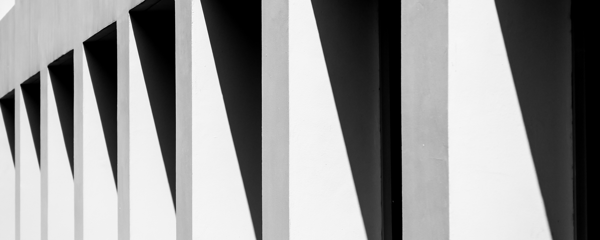

In der Fotografie werden senkrechte Linien, die nicht parallel verlaufen, als "stürzende Linien" bezeichnet, und sie treten auf, wenn die Aufnahmeebene (Bildsensor oder Film) nicht parallel zur vertikalen Ausrichtung des Motivs ausgerichtet ist. Normalerweise sind die vertikalen Linien bei Gebäuden parallel. Um ein Gebäude oder eine Struktur vollständig aufzunehmen, wird oft die Kamera leicht geneigt, wodurch die senkrechten Linien im Bild nach oben konvergieren.

Da stützende Lineine jedoch unnatürlich wirken, werden die meisten Architekturfotos ohne aufgenommen. Dies erfordert entweder eine Anpassung des Aufnahmestandpunkts oder den Einsatz von Fotogeräten mit Verschiebemechanismus, der es ermöglicht, die Objektivebene zur Aufnahmeebene zu verschieben. Alternativ können stürzende Linien nachträglich mithilfe von Software korrigiert werden, wobei die besten Ergebnisse durch die Anpassung der Objektivebene erzielt werden. Auf diese Weise kann auch das Verhältnis zwischen Vordergrund und Hintergrund sowie die Horizontlinie effektiv gesteuert werden.